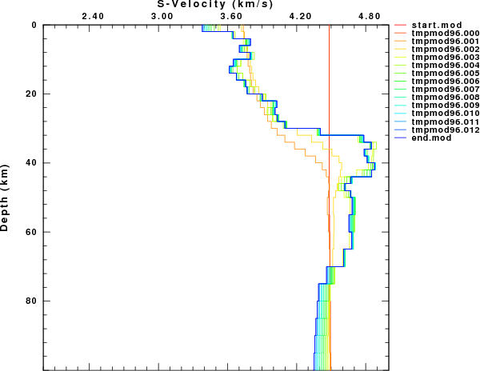

Evolution of model from the joint receiver function surface-wave dispersion inversion. Note only the upper 100 km of the models are displayed.
This tutorial demonstrates the inversion of surface-wave
dispersion and/or receiver functions for crustal structure.
This
tutorial requires that Computer Programs in Seismology be installed.
This requires that the PATH environment parameter be set to point to
the absolute location of PROGRAMS.330/bin. You can test this by
executing the command (s):
rbh@otto:~> which saccvt surf96 rftn96 joint96 plotxvig /home/rbh/PROGRAMS.310t/PROGRAMS.330/bin/saccvt /home/rbh/PROGRAMS.310t/PROGRAMS.330/bin/surf96 /home/rbh/PROGRAMS.310t/PROGRAMS.330/bin/rftn96 /home/rbh/PROGRAMS.310t/PROGRAMS.330/bin/joint96 /home/rbh/PROGRAMS.310t/PROGRAMS.330/bin/plotxvig rbh@otto:~>
You will also have to unpack the sample data sets from the tar-ball
srj.tgz
In order to use the data set you
must execute the following command:
gunzip -c srj.tgz | tar xvf -
cd JOINT
for i in R*[05]
do
saccvt -I < $i > tmp ; mv tmp $i
done
cd ..
cd RFTN
for i in R*[05]
do
saccvt -I < $i > tmp ; mv tmp $i
done
cd ..
The first command unpacks the sample data sets, creating the
subdirectories JOINT, SURF and RFTN.
Since the examples contain
SAC files of the receiver functions, the other command sequences go
into the JOINT and RFTN directories and run the program saccvt
to ensure that the SAC files are in the correct byte order for your
machine.
Each directory has all of the files that are
required.
Inversion of seismic data can lead to velocity models that
fit the observed data and which also can be an
unrealistic Earth model. This difficulty arises because the
data sets have limited resolution. For surface-wave this means an
inability to define sharp layer boundaries as well as decreasing
sensitivity to deep structure. Receiver functions are sensitive to
both shallow and deep structure.
These examples start with a
modified version of the AK135 model
http://wwwrses.anu.edu.au/seismology/ak135/ak135f.html
This
model differs from the given model by the replacement of the upper 50
km by the velocities at a depth of 50 km, thus yielding a constant
velocity model to a depth of 50 km. This approach was taken so that
the data have the ability to change the model, avoiding any sharp
velocity discontinuities that would persist through the inversion. In
addition, by starting with an overestimate of the velocity model, no
artificial low-velocity zone will be introduced.
Each
directory has its own DOIT.deep script. Please read
these scripts. You will see how the model inversion is weighted, so
that the deeper structure is fixed, the upper 50 km is permitted to
change a lot, and the region between 50 and 100 km has intermediate
weighting.
cd into the surf96 directory. Then execute the command
DOIT.deep
The DOIT.deep script will perform 30 iterations. It creates the final model end.mod. It also produces several figures: SRFPHV96.PLT and SRFPHR96.PLT
|
SRFPHV96.PLT showing initial and final models, and model fit to the dispersion. |
SRFPHR96.PLT showing resolution kernels |
We can see the progression of the inversion by
running the command
shwmod96 -ZMAX 100 -K -1 -LEG start.mod tmpmod96.??? end.mod
which shows the evolution of the final model through each iteration:
|
Evolution of model from the surface-wave inversion. Note only the upper 100 km of the models are displayed. |
cd into the rftn96 directory. Then execute the command
DOIT.deep
The DOIT.deep script will perform 30 iterations. It creates the final model end.mod. It also produces several figures: SRFPHV96.PLT and SRFPHR96.PLT
|
RFTNPV96.PLT showing initial and final models, and model fit to the dispersion. For parameter (sec/km) the receiver functions, the blue curve shows the data and the red curve shows the model prediction. Each receiver function is annotated with the ALPHA, GCARC and ray and the event information. |
SRFPHR96.PLT showing resolution kernels |
We can see the progression of the inversion by
running the command
shwmod96 -ZMAX 100 -K -1 -LEG start.mod tmpmod96.??? end.mod
which shows the evolution of the final model through each iteration:
|
 |
|
Evolution of model from the receiver function inversion. Note only the upper 100 km of the models are displayed. |
cd into the joint96 directory. Then execute the command
DOIT.deep
|
Joint inversion model fit to the dispersion data |
|
Joint inversion model fit to the receiver functions |
|
Resolution kernels for the joint inversion |
We can see the progression of the inversion by running the command
shwmod96 -ZMAX 100 -K -1 -LEG start.mod tmpmod96.??? end.mod
which shows the evolution of the final model through each iteration:
|
|
|
Evolution of model from the joint receiver function surface-wave dispersion inversion. Note only the upper 100 km of the models are displayed. |
We can compare the different inversion results by using the
program shwmod96 . We run the same command as before, but this
time from the parent directory, from which we can see the SURF, RFTN
and JOINT directories as
shwmod96 -ZMAX 100 -K -1 -LEG SURF/start.mod */end.mod
This produces the figure shwmod96.PLT which is shown here:
|
Comparison of starting model (red), final joint inversion (green ), final receiver function (blue-green) and final surface-wave (blue) inversion models. |
This example uses a real data set from a KIGAM station at Seoul National University. All models fit their individual data sets well. This highlights the point that inversions are not unique. Of the models, I prefer the joint inversion model. The upper mantle velocities for the receiver function inversion are too large. The surface-wave inversion lacks any detail about the Moho. The real reason for preferring the joint inversion model is that the model is better at fitting regional (100-300 km) broadband waveforms.